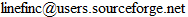

TVUnderground Downloader
An automatic downloader for your TV shows needs
TVUnderground downloader is a tool that permits you to download series from TVUnderground automatically.
It reads the rss feeds to download the ed2k links and add it to eMule via its web server.
Additional features includes:
- Custom interval time for refresh
- Pairing the ed2k links with categories from eMule
- Auto-start eMule when new links are downloaded
- Auto-close eMule when all downloads are finished
Download
Download the latest version at SourceForge
Requirements
This program requires Microsoft .Net 3.0
You can find it here.
Set up
- Click on "File"->"Options"->"Global Option"
- Go to the "Network" tab
- Set the url of the server you configured in eMule (ex: http://localhost:4000 or http://xxx.homeip.net:4000)
- Set the password of the web server
- Click on "Verify configuration", if all parameters are correct, you will receive a successful message
Known Bugs
FAQ
How to add a rss feed to the program?
Click on "Feeds"->"Add". The enter the url in the "RSS link" entry and click "Get feed"
Where can I find RSS links?
In each TVUnderground's seasons, there's this icon: in the top right corner. Right click on it, then click on copy link's address. You now have the address in your clipboard
Contact
Support is at:
.
Hosting
SourceForge.net provides hosting for TVUnderground Downloader